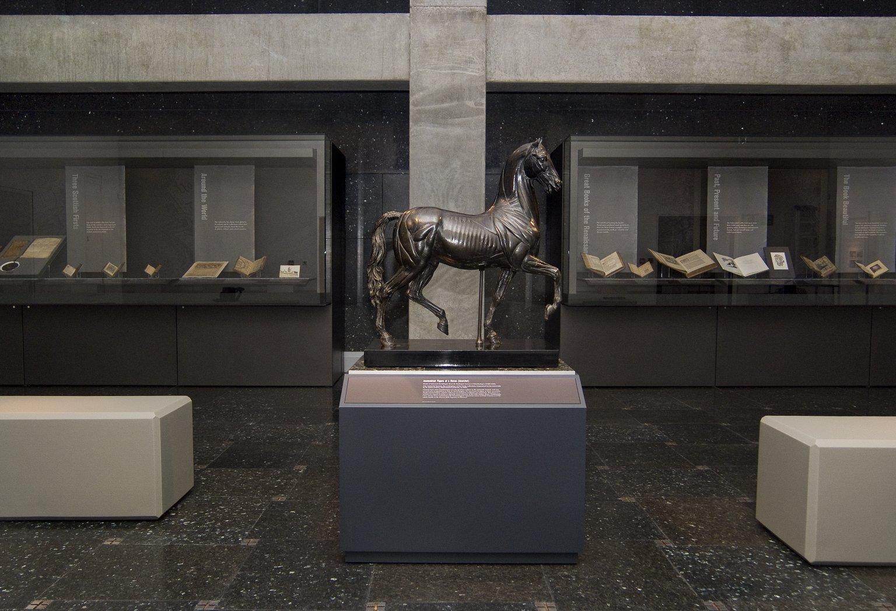

Image link resolution service
The LUNA digital-image system has been decommissioned.
This service preserves and redirects historic University of Edinburgh LUNA image links to their current locations in Digital Collections.
If you reached this page from a saved link, please check that the full link was copied.